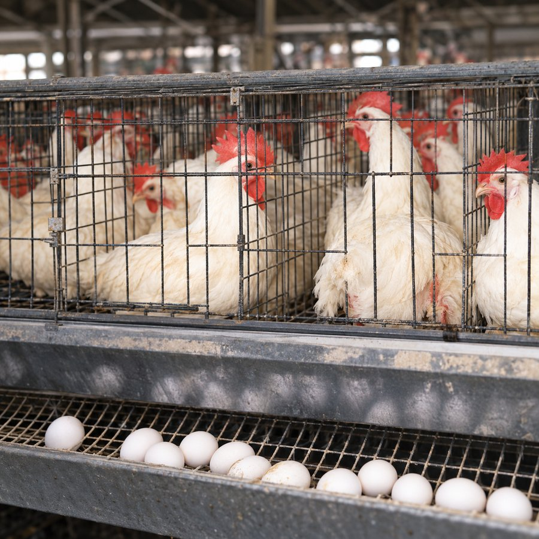
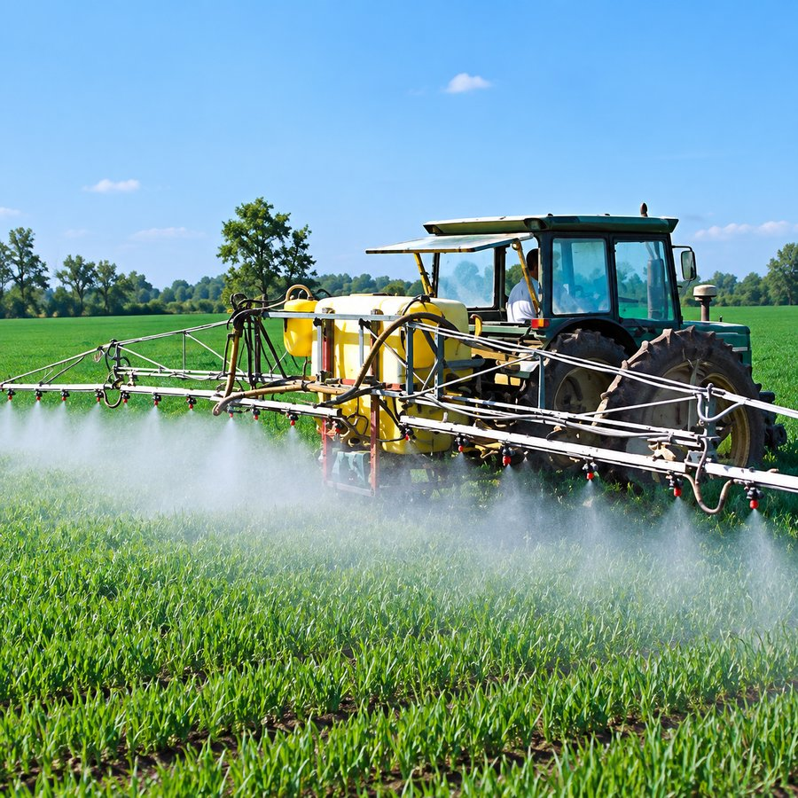
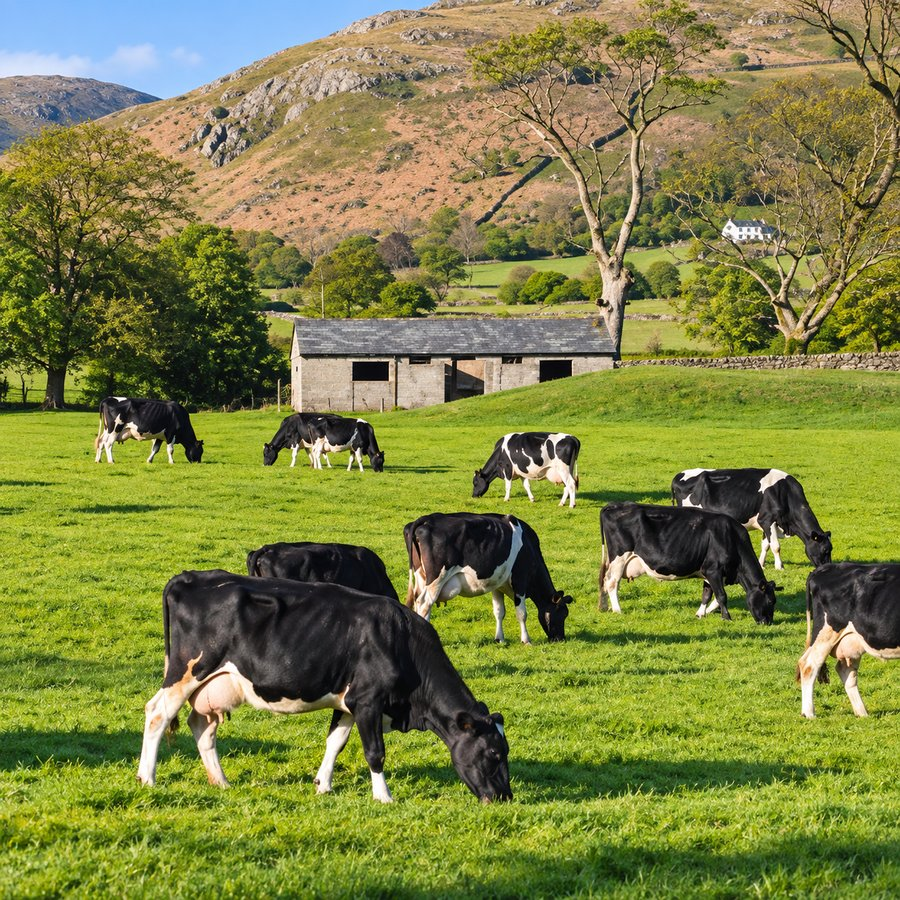
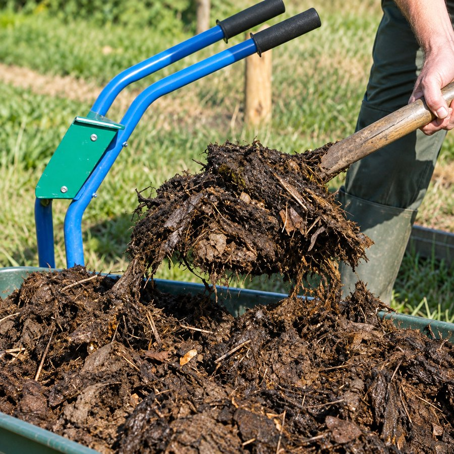
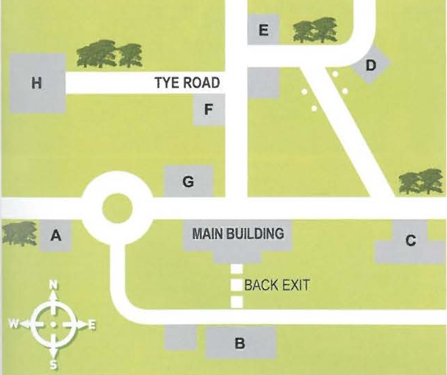

Wordlist — food & farming
These words come from today's article, video and listening material.
| word / phrase | meaning | example | common collocations |
|---|---|---|---|
| battery farming | a farming method in which animals, especially hens, are kept in small cages in large numbers | Battery farming remains controversial because of the conditions the animals live in. | battery farming methods; battery-farmed eggs |
| outdoor farming | a farming method in which animals live and graze freely outside | Outdoor farming generally requires more land than keeping animals indoors. | outdoor farming methods |
| pesticide | a chemical substance used to kill insects, weeds, or other pests on crops | Farmers spray pesticide to protect crops from insect damage. | spray/use pesticide; pesticide residue |
| crop rotation | growing different crops in the same field in a planned sequence over time | Crop rotation helps prevent the soil from losing important nutrients. | practise/use crop rotation |
| fertiliser | a substance added to soil to help plants grow, either natural or artificial | Many farmers now prefer natural fertiliser to synthetic chemicals. | natural/artificial/chemical fertiliser |
| genetically modified | describes an organism whose genetic material has been deliberately altered | Genetically modified crops are designed to resist disease or drought. | genetically modified crops/food (GM) |
| yield | the amount of a crop produced from a piece of land | Pesticides can significantly increase a farm's yield. | increase/improve a yield; crop yield |
| livestock | animals kept on a farm, such as cows, sheep, or chickens | The farm keeps livestock as well as growing crops. | raise/keep livestock |
| nutrient | a substance in food or soil that living things need to grow and stay healthy | Different crops draw different nutrients from the soil. | essential/vital nutrient |
| balanced diet | a diet containing the right amounts and variety of foods needed for good health | Doctors recommend a balanced diet rich in fruit and vegetables. | eat/maintain a balanced diet |
Complete the sentences with words from the table.
1. is controversial because of how the animals are kept.
2. tends to cost more but is better for animal welfare.
3. Some crops need very little to grow successfully.
4. is one way to keep soil healthy without chemicals.
5. Compost is a type of natural .
6. crops are designed to survive difficult growing conditions.
7. Using pesticide can significantly increase a farm's .
8. Cows, sheep, and chickens are all examples of .
9. Vitamins and minerals are examples of essential .
10. Eating a supports both physical and mental health.
Article — Modern Farming: Many Methods, One Goal
Read the article. The highlighted phrases are defined below it.
Around the world, farmers rely on a wide range of techniques to grow food and raise livestock, and the methods chosen can have a major impact on the environment, animal welfare, and the food that eventually reaches our plates.
One of the most controversial methods is battery farming, a system in which animals — most commonly egg-laying hens — are kept in small, tightly packed cages for their entire lives. Supporters argue that it keeps costs low and food affordable, but critics say the practice causes unnecessary suffering and has been banned or restricted in a growing number of countries.
At the other end of the spectrum is outdoor farming, where animals are free to graze and move around in open fields. This approach is generally seen as better for animal welfare, though it requires considerably more land and tends to produce food at a higher cost.
Crop farmers, meanwhile, face a different set of decisions. Pesticide use — spraying chemicals onto crops to kill insects, weeds, or fungi — remains extremely common because it can dramatically increase yields and protect against total crop failure. However, concerns about the long-term effects of chemical residue on human health and local wildlife have pushed many farmers to look for alternatives.
One such alternative is crop rotation, an ancient technique in which farmers change which crop is grown in a particular field from season to season. Because different plants draw different nutrients from the soil, rotating crops helps prevent the land from becoming exhausted, and can reduce the need for artificial fertiliser altogether. Speaking of which, many farmers now favour natural fertiliser — such as animal manure or compost — over synthetic chemical alternatives, believing it produces healthier soil in the long run, even though it can be messier and slower to apply.
Perhaps the most futuristic development in farming is genetic engineering, in which scientists directly modify a plant's genetic code to make it more resistant to disease, drought, or pests. Supporters claim this technology could be essential for feeding a growing global population, particularly as climate change makes farming conditions less predictable. Critics, however, worry about unknown long-term effects on both human health and biodiversity, and many countries continue to heavily restrict or ban genetically modified crops.
With so many competing methods and philosophies, it's little wonder that consumers are often confused about what "good" farming actually looks like. Increasingly, shoppers are turning to labels like "organic" for reassurance — although, as many nutritionists point out, the term itself covers a surprisingly wide range of farming practices, and doesn't automatically guarantee a food is healthier or more environmentally friendly than its non-organic equivalent.
Highlighted phrases
battery farming — keeping animals, especially hens, in small cages in large numbers.
outdoor farming — letting animals live and graze freely outside.
pesticide use — spraying chemicals on crops to kill insects, weeds, or fungi.
crop rotation — growing different crops in the same field over successive seasons.
natural fertiliser — using animal or plant-based material, rather than synthetic chemicals, to enrich soil.
genetic engineering — directly altering an organism's genetic material to give it new characteristics.
Comprehension — choose the correct answer.
1. According to the article, what is one criticism of battery farming?
2. What is one disadvantage of outdoor farming mentioned in the article?
3. Why do many farmers still use pesticides, according to the article?
4. What is the main benefit of crop rotation mentioned in the article?
5. What concern do critics have about genetically engineered crops?
Complete the sentences with a phrase from the article.
1. Keeping hens in small cages for their whole lives is known as .
2. Farms that let animals graze freely outside practise .
3. Spraying chemicals to protect crops from insects and weeds is called .
4. Growing different crops in the same field each season, called , helps keep soil healthy.
5. Many farmers prefer , such as manure or compost, over synthetic chemicals.
6. Scientists use to make crops more resistant to disease or drought.
Match the photos, then describe them
First, match each photo to the farming method it shows.
pesticide use · outdoor farming · genetic engineering · battery farming · crop rotation · natural fertiliser

Photo 1

Photo 2

Photo 3

Photo 4
Photo 5
Photo 6
Now describe each photo, using the term you matched to it. Write at least 30 words for each.
Photo 1
Photo 2
Photo 3
Photo 4
Photo 5
Photo 6
Reading — Organic Food: Why?
Work through the passage and questions below, just like a real computer-delivered IELTS reading test.
Vocabulary from the reading
These words and phrases come from the "Organic Food: Why?" passage.
Match each word or phrase with its definition.
1. conventional
2. compensate for
3. inefficient
4. statistically significant
5. simplistic
6. misleading
7. toxin
8. carcinogen
9. symptomatic of
10. irrelevant
Now complete these new sentences with the same words.
1. Doctors recommend treatment before trying anything experimental.
2. The coach tried to the team's lack of size with faster passing.
3. The old factory was slow and , using twice as much energy as necessary.
4. The study found a difference between the two groups' results.
5. Some critics say the film gives a view of a complicated historical event.
6. The advertisement was criticised for being about the product's benefits.
7. Certain mushrooms contain a dangerous that can cause serious illness.
8. Long-term exposure to the chemical is thought to act as a .
9. His sudden mood changes were a much deeper problem.
10. The interviewer asked several questions that seemed completely to the job.
Video — Healthy Eating Habits
Watch the video, then complete the three parts below.
Part 1 — choose the correct answer.
1. What is one of the main benefits of healthy eating mentioned in the video?
2. According to the video, what should make up about half of a balanced plate?
3. What is recommended to help prevent overeating?
4. Why does the video recommend limiting added sugar and salt?
5. What does mindful eating involve?
Part 2 — complete the sentences with a word from the box.
hydrated · refined · portions · cravings · distractions
1. Drinking plenty of water helps you stay and supports several aspects of health.
2. The video recommends avoiding grains as much as possible.
3. Using smaller plates can help people control their and prevent overeating.
4. Someone who strongly wants a particular type of food may experience food .
5. During mindful eating, people should avoid such as phones, computers, and television.
Part 3 — match the vocabulary with the correct definition.
1. adequate
2. nutrient
3. portion
4. crave
5. hydrated
6. intake
7. refined
8. saturated fats
9. mindful
10. savor
Listening Section 2 — hospital lifestyle talk
Exam information: You hear one speaker talking about a social topic.
You are going to hear a supervisor talking to a group of new nurses at a large hospital about healthy lifestyle habits, including cooking, exercise, and daily routines.
1. When did you last cook a meal from scratch?
2. What's your favourite way to stay active?
3. How often do you check your phone during the day?
Now listen and answer Questions 1–10.
Questions 1–5. Choose the correct letter, A, B or C.
1. According to Debbie, why do some people fail to eat a balanced diet?
2. Debbie recommends that staff should keep fit by...
3. Which benefit of exercise does Debbie think is most important?
4. What advice does Debbie give the nurses about health and safety?
5. When she talks about hygiene, Debbie asks the nurses to...
Questions 6–10. Label the map. Write the correct letter, A–H, next to each place.

6. recreation centre
7. health centre
8. swimming pool and sauna
9. health-food store
10. Jenny's Restaurant
Day 4 complete! 🎉
All 7 tasks done. Come back tomorrow for the next day.